텔레마케팅관리사 (2009-03-01 기출문제)
1과목: 판매관리
1. 제품 또는 서비스의 가격을 결정할 때 상대적인 저가 전략이 적합하지 않은 경우는?
- 시장수요의 가격탄력성이 높을 때
- 소비자들의 본원적인 수요를 자극하고자 할 때
- 진입장벽이 높아 경쟁기업의 진입이 어려울 때
- 원가우위를 확보하고 있어 경쟁기업이 자사 제품의 가격만큼 낮추기 힘들 때
(정답률: 50%)

2. 다음이 설명하는 시장 커버리지 전략은?
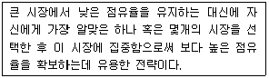
- 비차별화 마케팅
- 차별화 마케팅
- 집중화 마케팅
- 순차적 마케팅
(정답률: 100%)
3. 다음 중 기업의 마케팅믹스(4P)에 해당하지 않는 것은?
- 유통
- 가격
- 고객
- 제품
(정답률: 64%)
4. 고객의 가치를 계산하는 방식 중 RFM 모델에 대한 설명으로 틀린 것은?
- recency - 얼마나 최근에 우리 제품을 구입했는가
- frequency - 얼마나 자주 우리 제품을 구입하는가
- reflection - 얼마나 우리 제품생산에 영향을 끼치는가?
- monetary - 제품구입에 어느 정도의 돈을 쓰고 있는가
(정답률: 92%)
5. 아웃바운드 텔레마케팅의 성공요소가 아닌 것은?
- 부정확한 대상고객 선정
- 고객의 니즈에 맞는 전용상품
- 판매이후의 신뢰성 확보와 사후관리
- 잘 정리되고 업그레이드된 데이터베이스
(정답률: 100%)
6. 다음의 특징을 가지고 있는 가격결정방법은?
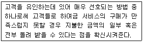
- 묶음 가격
- 서비스 보증
- 일률적 가격결정
- 편익 주도의 가격결정
(정답률: 92%)
7. 아웃바운드 텔레마케팅의 특성으로 틀린 것은?
- 아웃바운드에서는 고객 리스트가 반응률을 결정하며 기본적으로 객주도형이다.
- 아웃바운드는 무차별적 전화세일즈와는 달리 전화를 걸기 위한 사전준비가 필요하다.
- 고정고객관리는 신규고객 획득에 비해 시간과 비용면에서 더 경제적이고 효과도 높다.
- 아웃바운드가 인바운드보다 더 고도의 기술을 요하며 마케팅전략, 통합기법 등의 노하우, 텔레마케터의 자질 등에 큰 영향을 받는다.
(정답률: 50%)
8. 소비자가 서비스 구매의 의사결정과정에서 접할 수 있는 일반적인 위험의 유형에 관한 설명으로 틀린 것은?
- 재무적 위험 - 구매가 잘못되었거나 서비스가 제대로 수행되지 않았을 때 발생할 수 있는 금전적인 손실
- 물리적 위험 - 구매했던 의도와 달리 제대로 기능을 발휘하지 않을 가능성
- 사회적 위험 - 구매로 인해 소비자의 사회적인 지위가 손상 받을 가능성
- 심리적 위험 - 구매로 인해 소비자의 자존심이 손상받을 가능성
(정답률: 70%)
9. 아웃바운드 텔레마케팅의 대상인 고객의 정보에 대한 효율적인 관리방법이 아닌 것은?
- 고객정보의 유출방지
- 고객정보의 시속적인 확충
- 고객속성에 따른 획일적 대응
- 고객정보 및 속성별 질적 개선
(정답률: 83%)
10. 소수의 판매점으로 선택적인 유통분배에 해당하는 소비재 유형은?
- 편의품
- 선매품
- 전문품
- 비탐색품
(정답률: 47%)
11. 가맹점 입장에서의 프랜차이징 유통전략의 장점이 아닌 것은?
- 사업실패 위험을 줄일 수 있다.
- 광고 및 운영상 전문가의 노하우를 전수받을 수 있다.
- 성공적으로 구축된 브랜드명과 사업계획 활용이 가능하다.
- 기업규모의 성장을 위해 외부로부터 자금을 확보할 수 있다.
(정답률: 58%)
12. 판매 전략을 위한 시장세분화 변수 중 인구통계적 변수에 해당하지 않는 것은?
- 성별
- 연령
- 개성
- 교육수준
(정답률: 75%)
13. 아웃바운드 텔레마케팅시 상품을 효과적으로 설명하는 방법으로 틀린 것은?
- 고객의 말을 경청하고 질문을 곁들이면서 설명한다.
- 경쟁 상품과 비교하여 고객이 쉽게 판단할 수 있어야 한다.
- 상품의 장점을 반복해서 설명하여 고객이 납득할 수 있어야 한다.
- 고객 불평 처리를 효과적으로 하기 위해 문제해결 방안을 모색하여 대응한다.
(정답률: 59%)
14. 소비재 중 전문품의 특성이 아닌 것은?
- 제품이 가지는 전문성이나 독특한 성격 때문에 대체품이 존재하지 않고 브랜드 인지도가 높다.
- 소비자는 자기가 원하는 상표를 찾아내기 위해 쇼핑에 많은 노력을 기울인다.
- 생산자가 대부분의 촉진부담을 가진다.
- 가격에 대해서는 탄력적이다.
(정답률: 64%)
15. 아웃바운드 텔레마케터의 판매관리 범위에 대한 설명으로 틀린 것은?
- 판매촉진 - 카달로그, DM발송, email마케팅 등의 활동
- 시스템관리 - 컴퓨터, 전화, 전산시스템관리 등의 활동
- 고객관리 - 고객분류, 고객니즈별 구매행위 분석, 고객 상담 관리 등의 활동
- 판매준비 - 판매전략수립, 고객데이터 준비, 상담원 교육, 광고, 안내 준비 등의 활동
(정답률: 알수없음)
16. 유통경로의 설계과정을 바르게 나열한 것은?
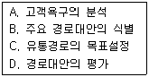
- A→C→B→D
- B→A→D→C
- C→B→A→D
- D→C→A→B
(정답률: 90%)
17. 표적시장을 선정하기 위한 세분시장의 평가요소에 해당하지 않는 것은?
- 기업의 고객
- 기업의 목표와 재원
- 세분시장의 규모와 성장
- 세분시장의 구조적 매력성
(정답률: 40%)
18. 다음 데이터베이스 영역 중 고객속성 데이터베이스에 해당하지 않는 것은?
- 성별분류
- 전화번호
- 클레임분류
- 연령별분류
(정답률: 64%)
19. 고객이 구매를 결정하기까지의 심리적인 의사결정 단계에 해당하지 않는 것은?
- 접촉(touch)
- 행동(action)
- 흥미(interest)
- 주의(attention)
(정답률: 50%)
20. 신규고객유지율, 기존고객보유율, 고객반복이용률 등의 효과를 측정하는 데 사용되는 척도는?
- 고객신뢰도
- 고객반응률
- 고객기여도
- 고객성장률
(정답률: 48%)
21. 제품 또는 서비스의 가격세분화 기준에 관한 설명으로 틀린 것은?
- 세분시장이 충분히 커야 한다.
- 상이한 세분시장의 고객들은 가격의 변화에 대해 동일하게 반응해야 한다.
- 세분시장을 확인할 수 있어야하고, 차별적으로 가격을 책정할 수 있는 수단이 마련되어야 한다.
- 특정 세분시장에서 저가격에 상품 또는 서비스를 구매한 고객이 다른 세분시장의 고객엫서 동일한 서비스를 판매할 기회를 주어서는 안된다.
(정답률: 69%)
22. 제품 수명주기 중 성숙기의 특징으로 옳은 것은?
- 원가가 높다.
- 경쟁자가 거의 없다.
- 판매가 절정에 이른다.
- 혁신적인 고객이 제품을 산다.
(정답률: 91%)
23. 다음이 설명하는 시장세분화 분류기준은?
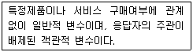
- 인구통계학
- 라이프 스타일
- 심리 및 태도
- 제품편익
(정답률: 54%)
24. 고등학교 3학년에 재학 중인 학생이 향후 지원하고자하는 대학교를 다음과 같이 평가 했을 때의 설명으로 옳은 것은?
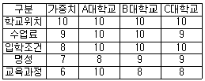
- 보완적 접근법으로 학교를 선택하면 A대학교를 선택하게 된다.
- 보완적 접근법으로 학교를 선택하면 B대학교를 선택하게 된다.
- 사전편집식 방법으로 학교를 선택하면 A대학교를 선택하게 된다.
- 사전편집식 방법으로 학교를 선택하면 C대학교를 선택하게 된다.
(정답률: 74%)
25. 포지셔닝 전략의 수립과정에서 가장 먼저 수행하는 시장분석을 통해 얻을 수 있는 정보가 아닌 것은?
- 현재와 미래의 시장내의 경쟁구조
- 시장내 수요의 전반적인 수준 및 추세
- 세분시장의 크기와 잠재력
- 시장내 소비자의 지리적 분포
(정답률: 67%)
2과목: 시장조사
26. 다음 중 1차 자료 수집방법의 선택기준으로 틀린 것은?
- 다양성
- 신속도와 비용
- 주관성과 타당성
- 객관성과 정확성
(정답률: 80%)
27. 다음 중 설문지 상에서 가장 먼저 위치해야 하는 설문지의 구성요소는?
- 면접자의 신상기록 항목
- 응답자 분류를 위한 문항
- 응답자에 대한 협조요청문
- 필요한 정보 획득을 위한 문항
(정답률: 90%)
28. 다음 중 전화면접법에 단점이 아닌 것은?
- 그림, 도표 등의 시각적 보조자료를 활용할 수 없다.
- 전화를 통해 접근할 수 있는 대상이 인구학적 변수에 따라 달라질 수 있다.
- 질문의 길이와 내용을 제한받게 된다.
- 조사자들에 대한 감독이 어렵다.
(정답률: 55%)
29. 효과적인 전화조사를 위하여 고려하여야 할 사항과 가장 거리가 먼 것은?
- 응답자가 불편을 느끼지 않는 시간대를 선택한다.
- 전화조사시 질문은 짧고 단순하게 구성하고 질문의 수를 줄인다.
- 전화조사는 중간에 전화가 끊기거나 소음 등에 방해를 받지 않도록 한다.
- 전화조사시에는 경제성을 고려하여 다양한 주제에 대하여 많은 내용을 조사하도록 한다.
(정답률: 73%)
30. 다음 중 종단조사에 관한 설명으로 틀린 것은?
- 시점을 달리하며 동일한 현상에 대한 측정을 되풀이 하는 조사방법이다.
- 각 기간 동안 일어난 변화에 대한 측정이 주된 과제가 된다.
- 특정조사대상들을 선정해 놓고 반복적으로 조사를 실시하는 조사방법이다.
- 모집단에서 임시적으로 추출된 표본으로부터 자료를 얻는다.
(정답률: 54%)
31. 시장조사가 기여할 수 있는 마케팅의사결정의 주요 구성요소가 아닌 것은?
- 마케팅 계획의 수립과 실행
- 마케팅 계획의 유효성과 평가
- 마케팅 기회와 제약 요인의 규명
- 마케팅 조사에 할당되는 자금의 규모
(정답률: 80%)
32. 마케팅 조사설계시 내적 타당성을 저해하는 요소에 해당되지 않는 것은?
- 통계적 회귀
- 특정사건의 영향
- 사전검사의 영향
- 반작용효과
(정답률: 67%)
33. 비표준화 면접에 비해 표준화면접이 가지는 장점이 아닌 것은?
- 반복적인 면접이 가능하다.
- 면접상황에 대한 적응도가 높다.
- 면접결과의 숫자화 측정이 용이하다.
- 조사자의 행동이 통일성을 갖게 된다.
(정답률: 42%)
34. 측정의 신뢰성을 높이는 방법에 대한 설명으로 틀린 것은?
- 조사의 설명이나 조건을 표준화할 수 있다.
- 응답자가 다른 사람의 영향을 받을 가능성이 있다.
- 모집단이 클수록 조사집단이 대표성을 확보할 수 있다.
- 응답자 개인별 차이를 무시할 우려가 있어 타당성이 낮아질 수 있다.
(정답률: 0%)
35. 다음 중 집단조사법에 관한 설명으로 틀린 것은?
- 조사의 설명이나 조건을 표준화할 수 있다.
- 응답자가 다른 사람의 영향을 받을 가능성이 있다.
- 모집단이 클수록 조사집단이 대표성을 확보할 수 있다.
- 응답자 개인별 차이를 무시할 우려가 있어 타당성이 낮아질 수 있다.
(정답률: 50%)
36. 다음 중 체계적인 설문지 작성과정을 바르게 나열한 것은?
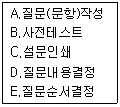
- A → B → C → D → E
- D → A → E → B → C
- B → A → E → D → C
- C → E → D → A → B
(정답률: 84%)
37. 다음과 같이 시장 내의 여러 경쟁 상표들에 대한 소비자의 생각을 하나의 도표 상에 나타낸 것은?
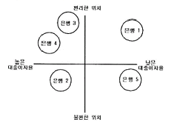
- 로드맵
- 포지셔닝 맵
- 횡단 조사표
- 송단 조사표
(정답률: 알수없음)
38. 1차 자료의 수집방법에 해당하지 않는 것은?
- 설문조사
- 문헌조사
- 실험조사
- 전화조사
(정답률: 58%)
39. 다음 중 시장조사의 역할과 거리가 먼 것은?
- 불확실성과 위험성 극대화
- 문제해결을 위한 조직적 탐색
- 고객의 심리적, 행동적인 특성 간파를 통한 고객만족경영
- 타당성과 신뢰성을 높은 정보의 획득 및 의사결정능력 제고
(정답률: 알수없음)
40. 전화조사를 위한 표본추출방법에 대한 설명으로 틀린 것은?
- 전화번호부를 활용할 대에는 맨 앞과 맨 끝은 배제하는 것이 좋다.
- 최초의 목적대로 그리고 하나의 규정이 있으면 그에 따라 계속한다.
- "가나다" 순으로 되어 있는 기존 전화번호부에서 표본을 추출할 때에는 체계적 표본추출법을 사용하는 것이 좋다.
- 지역적 표본 추출시 전화번호부에 표기된 지역번호 구분이 아니라 행정적 경계에 따라 표본단위를 정하는 것이 좋다.
(정답률: 62%)
41. 면접조사 방법과 비교하여 전화조사가 가지는 장점으로 틀린 것은?
- 전화조사 방법은 면접조사 방법에 비해 시간과 비용을 절약할 수 있다.
- 전화조사는 면접조사보다 응답자가 긴 시간을 할애할 수 있어 구체적이고 자세한 조사를 할 수 있다.
- 면접원을 용무가 없는 사람으로 생각하고 방문을 금지하는 경우가 있지만 전화는 이러한 상황을 극복할 수 있다.
- 면접조사는 면접원들이 조사결과에 영향을 미쳐 각각 다른 결과를 가져올 수 있으나 전화조사는 그럴 위험이 비교적 적다.
(정답률: 75%)
42. 다음 중 확률표본추출방법에 해당하지 않는 것은?
- 계통표집
- 층화표집
- 편의표집
- 집락표집
(정답률: 55%)
43. 다음 설문문항의 오류에 대한 설명으로 옳은 것은?
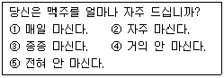
- 대답을 유도하는 질문을 하고 있다.
- 가능한 응답을 모두 제시하지 않고 있다.
- 응답항목들 간의 내용이 중복되고 있다.
- 하나의 항목으로 두 가지 내용을 질문하고 있다.
(정답률: 60%)
44. 다음 중 관할하고자 하는 현상의 원인이라고 가정한 변수는?
- 종속변수
- 외생변수
- 독립변수
- 통제변수
(정답률: 36%)
45. 다음 중 2차 자료에 관한 설명으로 틀린 것은?
- 단기간에 자료를 쉽게 획득할 수 있다.
- 2차 자료는 1차 자료에 비해 상대적으로 비용이 적게 든다.
- 당면한 조사문제를 해결하기 위하여 직접 수립된 자료이다.
- 2차 자료는 1차 자료를 수집하기 전에 주로 예비조사로 사용된다.
(정답률: 72%)
46. 시장조사의 유형을 조사방법에 따라 분류할 수 있다. 다음은 무슨 조사의 설명인가?
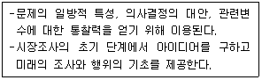
- 패널조사
- 탐색적조사
- 인과적조사
- 기술적조사
(정답률: 알수없음)
47. 과학적 조사방법의 특성으로 틀린 것은?
- 과학적 조사방법을 통해 시장조사과정과 분석과정에서 오류를 최소화하도록 해야 한다.
- 과학적 조사방법은 개인적 경험, 직관, 감성을 근거로 자료를 수집하여 시장문제를 분석한다.
- 과학적 조사방법으로 시장의 문제점으로 발견하고, 원인규명을 통하여 시장문제를 예측할 수 있다.
- 조사자는 시장문제를 구성하고 있는 요소들을 구분하고 그 상호관계를 분석함으로써 시장문제의 원인을 파악하고 해결방안을 모색한다.
(정답률: 알수없음)
48. 연구의 단위(unit)를 혼동하여 집합단위의 자료를 바탕으로 개인의 특성을 추리할 때 저지를 수 있는 오류는?
- 집단주의 오류
- 생태주의 오류
- 개인주의 오류
- 환원주의 오류
(정답률: 22%)
49. 다음 척도의 종류는?
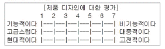
- 서스톤척도
- 리커트척도
- 커트만척도
- 의미분화척도
(정답률: 50%)
50. 다음 중 신뢰도를 측정하는 방법에 관한 설명으로 틀린 것은?
- 재검사법 - 동일한 상황에서 상이한 측정도구를 사용하여 동일한 대상을 일정한 간격을 두고 두 번 측정하여 그 결과를 비교한다.
- 복수양식법 - 대등한 2가지 형태의 측정도구를 이용하여 동일한 측정대상을 동시에 측정하고 두 측정값의 상관관계를 분석한다.
- 반분법 - 측정도구를 임의로 반으로 나누어 독립된 두개의 척도를 사용한다.
- 내적 일관성 - 동일한 개념을 측정하기 위해 여러개의 항목을 이용할 경우 크로바하의 알파 계수를 이용하여 신뢰도를 저해하는 항목을 측정도구에서 제외한다.
(정답률: 42%)
3과목: 텔레마케팅관리
51. 콜센터 문화에 영향을 미치는 사회적 요인에 해당되지 않는 것은?
- 행정당국의 제도적 지원
- 상담원의 근로선택의 자유로움
- 상담원에 대한 직업의 매력도
- 상담원과 수퍼바이저의 인간적 친밀감
(정답률: 53%)
52. 성과 달성을 위한 목표 관리의 중점사항이 아닌 것은?
- 개인별 수행목표는 수치화로 명확해야 한다.
- 환경이 변하더라도 목표는 일관성이 있어야 한다.
- 조직의 목표와 개인의 목표가 연계성이 있어야 한다.
- 목표 수행시 상담원과 관리자 간의 의사소통이 필요하다.
(정답률: 알수없음)
53. 콜센터의 중요성에 관한 설명으로 틀린 것은?
- 정보수집의 창구이다.
- 고객접점의 제1선이다.
- 기업의 핵심전략을 수립한다.
- 기업 이미지 제고에 기여한다.
(정답률: 70%)
54. 다음 중 콜센터 조직의 특성이 아닌 것은?
- 고객지향적 조직이다.
- 고객과 간접적으로 접촉하는 조직이다.
- 정보와 커뮤니케이션을 매개로 하는 조직이다.
- 상황의 다양성, 집중성, 즉시성을 요구하는 대응조직이다.
(정답률: 58%)
55. 유통업체에 직접 텔레마케팅을 운영하는 직용체제의 장점이 아닌 것은?
- 통제의 용이성
- 종업원의 몰입도
- 고정투자비의 감소
- 교육/훈련의 숙련도
(정답률: 47%)
56. 인바운드 텔레마케팅의 활용분야가 아닌 것은?
- 주문, 예약처리
- 신규가입 문의 및 상담
- 고객 불만사항 처리
- 구매감사, 해피콜
(정답률: 77%)
57. 성과주의 인사제도의 구성요소에 해당되지 않는 것은?
- 선별적 채용
- 성과주의 평가
- 공식적인 교육훈련
- 연공서열 위주의 승진
(정답률: 75%)
58. 콜 예측량 모델링을 위한 콜센터 지표가 아닌 것은?
- 평균 통화시간
- 평균 마무리 처리시간
- 고객콜 대기시간
- 신규고객 획득비용
(정답률: 62%)
59. 다음 중 콜센터 관리자에게 요구되는 자질이 아닌 것은?
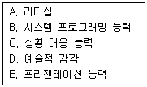
- A,C
- B,D
- C,E
- D,E
(정답률: 73%)
60. 인바운드텔레마케팅과 아운바운드텔레마케팅을 구분하는 기준은?
- 텔레마케팅의 소구대상
- 텔레마케팅의 전개장소
- 콜센터의 운영주체
- 전화를 거는 주체
(정답률: 알수없음)
61. 견습 및 경험중심의 OJT 교육내용에 해당하지 않는 것은?
- 역할연기
- 보고하기
- 발표기회 제공
- 주의 및 질책
(정답률: 알수없음)
62. 직무분석의 방법 중 관찰법에 대한 설명으로 옳은 것은?
- 대상직무의 작업자가 많은 시간을 할애해야 한다.
- 다른 작업자를 감독하거나 조정하는 등의 직무내용에 적합하다.
- 분석자의 주관이 개입될 위험이 작다.
- 분석자는 대상업무에 대한 전문적 지식이 필요 없다.
(정답률: 60%)
63. 인적자원의 개발을 위한 교육훈련의 성과를 측정하기 위한 평가 방법에 관한 설명으로 틀린 것은?
- 전이 평가 - 교육의 결과를 얼마나 동료에게 전달하는지 측정한다.
- 학습 평가 - 실제 교육을 통해 향상된 지식과 기술 및 태도를 측정한다.
- 반응 평가 - 설문을 통해 피교육자가 교육을 어떻게 생각하는지 조사한다.
- 효과성 평가 - 교육을 통해 향상된 지식, 기술, 태도를 활용하여 조직성과를 얼마나 높였는지 측정한다.
(정답률: 50%)
64. 다음 중 통화 생산성 측정 지표로 틀린 것은?
- 고객접촉률
- 평균 응대속도
- 평균 콜처리 시간
- 통화 후 처리시간
(정답률: 알수없음)
65. 다음 중 콜센터의 인적자원 관리 방안으로 적합하지 않은 것은?
- 다양한 동기부여 프로그램
- 콜센터 리더 육성 프로그램
- 상담원 수준별 교육훈련 프로그램
- 상담원의 안정을 위한 고정급의 급여체계
(정답률: 50%)
66. OJT가 성공하기 위한 관리자의 태도로 틀린 것은?
- 결과를 평가하고 확인한다.
- 적시에 Feed Back을 행한다.
- 상담원과 공동으로 목표를 세운다.
- 관리자 자신의 관심사만을 열거한다.
(정답률: 67%)
67. 조직의 성과관리를 위한 개인평가방법을 상사평가방식과 다면평가방식으로 구분할 때 상사평가방식의 특징이 아닌 것은?
- 상사의 책임감 상실
- 간편한 작업 난이도
- 평가결과의 공정성 미흡
- 중심화, 관대화 오류발생 가능성
(정답률: 50%)
68. 개인 성과평가의 신뢰성과 공정성을 확보하기 위한 방법으로 틀린 것은?
- 다면평가를 효율적으로 활용한다.
- 평가자에 대해 평가체계, 평가기법 등의 종합적인 평가 관련 교육을 강화한다.
- 평가결과는 비공개로 하고 평가자와 피평가자간의 면담을 통한 코칭을 활성화한다.
- 피평가자가 평가결과에 불만이 있는 경우 이의제기를 할 수 있는 소통채널을 운영한다.
(정답률: 63%)
69. 콜센터 생산성 평가를 위한 핵심요소로 적절하지 않은 것은?
- 매출ㆍ이익률
- 모니터링 횟수
- 실시간 성과분석
- 고객데이터 생산성
(정답률: 62%)
70. 경영진이 조직의 목표와 성과향상을 성취하고 비전을 달성하기 위한 활동으로 틀린 것은?
- 비전과 목표를 전파할 수 있는 설명회 등을 개최한다.
- 전략수립단계에서 설정된 중장기 성과 목표와 전략 및 세부활동 등을 주기적으로 점검한다.
- 조직의 경영방침과 본부, 부서, 팀 등과 같은 조직 단위의 중장기, 단기 경영계획을 분리한다.
- 주주, 고객, 종업원, 파트너 등의 제반 이해관계자들과 접촉하는 시간을 마련하고 이해관계를 균형있게 조절한다.
(정답률: 67%)
71. 통화 품질 관리의 목적으로 가장 적합한 것은?
- 텔레마케터의 사적인 통화 방징
- 텔레마케터가 제대로 통화하는지 감시
- 통화 품질 결과를 텔레마케터의 급여에 반영
- 통화품질 개선으로 고객에 대한 서비스 향상
(정답률: 91%)
72. 텔레마케팅의 전개과정을 바르게 나열한 것은?
- 기획 → 실행 → 반응 → 측정 → 평가
- 기획 → 실행 → 측정 → 반응 → 평가
- 기획 → 측정 → 실행 → 평가 → 반응
- 기획 → 측정 → 실행 → 반응 → 평가
(정답률: 37%)
73. 텔레마케터의 이직률을 줄이기 위한 방안으로 적절하지 않은 것은?
- 인적자원 중시
- 정규직의 감소
- 안정된 근로조건
- 심리공황의 방지책 강구
(정답률: 69%)
74. 다음 중 기업에서 텔레마케팅을 도입하는 목적에 해당되는 것을 모두 바르게 나열한 것은?
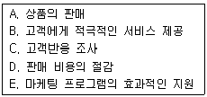
- A, B, C
- A, B, C, D
- A, B, C, E
- A, B, C, D, E
(정답률: 73%)
75. 다음 ( )안에 들어갈 가장 알맞은 것은?
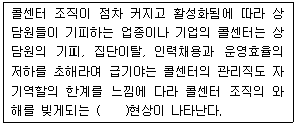
- 철새둥지
- 한우리 문화
- 콜센터 심리공황
- 커뮤니케이션 장벽
(정답률: 알수없음)
4과목: 고객응대
76. 다음 중 CRM의 등장 배경과 거리가 먼 것은?
- IT 기술의 발전
- 시장의 규제 강화
- 매스마케팅의 비효율성
- 고객의 기대 및 요구의 다양화
(정답률: 54%)
77. 구매전 단계에서 커뮤니케이션의 목표에 해당하지 않는 것은?
- 구매위험의 감소
- 상표인지의 증대
- 기업이미지의 개발
- 반복구매행동의 증대
(정답률: 알수없음)
78. 말하기 기법에서 청자의 듣기핵심 3요소가 아닌 것은?
- 파악
- 수용
- 이해
- 반응
(정답률: 알수없음)
79. 고객과의 대화시 효과적인 언어표현방법으로 가장 거리가 먼 것은?
- 명령형보다는 의뢰형으로 표현해야 한다.
- 전문용어보다는 이해하기 쉬운 단어로 표현해야 한다.
- 텔레마케터 중심의 언어보다는 고객중심의 언어로 표현해야 한다.
- 평상시 언어로 자연스럽게 표현해야 한다.
(정답률: 74%)
80. 고객불만 상담의 원칙에 해당하지 않는 것은?
- 고객의 입장을 존중한다.
- 회사의 규정과 기준에 대해 자세히 설명한다.
- 상담원의 개인감정을 표출하지 않는다.
- 고객의 가치관을 바꾸려 하지 않는다.
(정답률: 63%)
81. CRM의 활용에 대한 설명으로 틀린 것은?
- 시장점유율보다 고객점유율에 비중을 둔다.
- 고객유지보다는 고객획득에 중점을 둔다.
- 제품판매보다는 고객관계관리에 중점을 둔다.
- 고객로열티 극대화를 중시한다.
(정답률: 80%)
82. 발신자에 의한 커뮤니케이션 장애요인이 아닌 것은?
- 반응과 피드백 부족
- 커뮤니케이션 스킬 부족
- 발신자의 신뢰 부족
- 타인에 의한 민감성 부족
(정답률: 30%)
83. 연세가 많은 고객에 대한 상담시 피해야 할 사항은?
- 호칭에 신경을 쓰드록 한다.
- 공손하게 응대하고 질문에 정중하게 답한다.
- 순발력 있고 빠른 속도로 응대한다.
- 고객의 의견을 존중한다.
(정답률: 59%)
84. 텔레마케팅을 통한 고객응대의 특성에 대한 설명으로 틀린 것은?
- 상대방의 얼굴을 볼 수 없어 청각에 절대적으로 의존하게 되므로 더욱 세심한 주의가 요구된다.
- 상담시에는 텔레마케터와 고객 모두 통화 내용에만 집중하므로 다른 소음 등의 전달여부에는 별도의 주의가 필요없다.
- 고객은 시간과 장소를 가리지 않고 전화를 하므로 언제든지 이를 수용할 수 있는 자세를 갖추어야 한다.
- 고객의 시간과 경비를 배려하기 위해 정확하고 간결하게 정보를 전달한다.
(정답률: 알수없음)
85. 다음 ( )안에 들어갈 알맞은 것은?
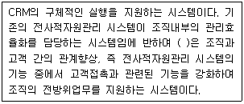
- 분석 CRM
- 운영 CRM
- 협업 CRM
- eCRM
(정답률: 64%)
86. 기업과 고객의 만남과 상호작용을 통한 고객변화의 단계에 관한 설명으로 틀린 것은?
- 예상고객 단계 - 개인적 접촉, 우편, 텔레마케팅 등을 통해 첫 거래를 성사시킬 수 있는 상태이다.
- 고객 단계 - 금전적 인센티브 등에 의해 재구매 동기를 갖게 된다.
- 단골 단계 - 제품 또는 서비스에 불만이 생겨도 동일한 점푸나 동일한 브랜드를 이용하는 성향을 보인다.
- 기업의 옹호자 단계 - 좋은 구전을 전파함으로써 간접적인 광고역할을 하며 고객을 끌어오기도 한다.
(정답률: 38%)
87. 구매후 고객응대의 유형이 아닌 것은?
- 구매행동을 위한 대안제시
- 고객의 불만과 문제접수 및 해결
- 불만사항에 대한 책임소재와 이해 촉구
- 지불, 환불, 교환에 관한 응대
(정답률: 64%)
88. 성공적인 CRM 적용을 위한 고려사항이 아닌 것은?
- 고객을 중심으로 거래 데이터가 통합되어야 한다.
- 고객분석을 위한 고객의 상세정보가 수집되어야 한다.
- 고객분석결과를 활용할 수 있도록 제반 업무절차가 정립되고 시행되어야 한다.
- 고객분석결과를 마케팅에 활용하기 위해서 보유상품 및 서비스에 대한 기준을 상담원에게 일임시켜야 한다.
(정답률: 73%)
89. DB마케팅의 대상 및 상품별 전략의 연결로 틀린 것은?
- 기존고객 - 기존 상품 - 고객활성화 전략
- 기존고객 - 신규 상품 - 교차판매 전략
- 잠재고객 - 기존 상품 - 고객유지 전략
- 잠재고객 - 신규 고객 - 신규고객확보 전략
(정답률: 43%)
90. 전화에 의한 고객응대와 전자우편에 의한 고객응대의 비교설명으로 가장 옳은 것은?
- 전화 응대는 공손하게 경어를 사용해야 하지만 전자우편 응대는 속어를 사용하는 것이 친밀감을 높이는 데 좋다.
- 전화 응대는 바로 답변해야 하기 때문에 신속한 응대가 중요하지만 전자우편은 며칠 간격을 두고 천천히 답변해도 된다.
- 전화는 실시간으로 답변해야 하나 전자우편은 시차를 두고 답변하므로 상담원 배치 및 일의 분배 측면에서는 전자우편 답변이 훨씬 쉽다.
- 전화나 전자우편이나 상담원에게 요구되는 자질이 동일하다.
(정답률: 36%)
91. 구매후 고객응대에 관한 설명으로 틀린 것은?
- 고객이 구입한 제품이나 서비스를 사용하는 과정 혹은 배달 및 운송에서 발생한 문제 등에 대해 효과적이고 전문적인 상담을 수행한다.
- 고객이 구입한 제품의 결함, 정신적 또는 물질적 피해에 대한 보상을 요구했을 때 이미 판매한 이후의 일이므로 고객의 요구를 무마시킨다.
- 고객들로부터 제품이나 서비스의 성능, 재질, 가격, 배송, 사후관리 등에 대한 만족도와 상담의 질에 대한 만족도를 측정,관리한다.
- 고객의 정기적 또는 비정기적 온오프라인 상의 모니터링 참여를 유도하여 이를 마케팅 정책이나 상담관리에 반영한다.
(정답률: 84%)
92. 다음 중 메세지의 성격이 다른 하나는?
- 자세
- 음성
- 눈짓
- 편지
(정답률: 50%)
93. 커뮤니케이션에서 나타날 수 있는 문제점으로써 전달자 측면의 요인에 관한 설명이 아닌 것은?
- 전달경로의 특성 - 커뮤니케이션의 통로를 의미하며 대면, 문서, 통화 상징물 등이 포함된다.
- 메세지 명확화 능력 - 전달하고자 하는 정보의 내용을 얼마나 명확하게 할 수 있는가 하는 능력이다.
- 전달능력 - 자신의 메세지를 정확하고 신속하게 전달할 수 있는 매체를 선정하고 이를 활용할 수 있는 능력을 말한다.
- 개인적 특성 - 전달자의 감정과 태도 또는 가치관이나 기질 등에 관련되는 인격이 내향성인가 외향성인가, 지배성향이 강한가 약한가 등에 따라 커뮤니케이션의 효과는 달라질 수 있다.
(정답률: 31%)
94. 텔레마케터의 효과적인 경청기술이 아닌 것은?
- 고객의 이야기에 대한 관심을 구체적으로 표현한다.
- 확실하지 않은 내용은 다시 한번 정중하게 물어본다.
- 고객의 말을 끊지 말고 끝가지 주의 깊게 들어야 한다.
- 주관적인 판단이나 감정을 통하여 이해하려고 노력한다.
(정답률: 70%)
95. 다음 중 인바운드 상담 절차를 바르게 나열한 것은?
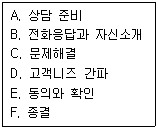
- A→C→D→B→E→F
- A→D→C→B→E→F
- A→B→D→C→E→F
- A→D→B→C→E→F
(정답률: 92%)
96. 공감대 형성을 위한 화법에 관한 설명으로 틀린 것은?
- 고객의 신분에 맞는 존칭어를 사용한다.
- 고객의 말에 적극적인 동감 표현을 한다.
- 고객과의 공감을 형성하는데 도움을 주는 공통화제를 선정하는 것이 중요하다.
- 전체 상담의 원활한 진행과 분위기를 위해 고객의 대화를 아무 말 없이 끝까지 듣는다.
(정답률: 알수없음)
97. 의심이 많은 고객의 응대요령으로 가장 올바른 것은?
- 한 가지 상품을 제시하고, 고객을 대신하여 결정을 내린다.
- 근거가 되는 구체적 자료를 제시한다.
- 맞장구 함께 천천히 용건에 접근한다.
- 묻는 말에 대답하고 의사에 존중한다.
(정답률: 70%)
98. 다음 중 듣기의 일반적인 과정을 바르게 나열한 것은?
- 응답→듣기→해석→평가
- 듣기→해석→평가→응답
- 듣기→평가→응답→해석
- 응답→듣기→평가→해석
(정답률: 43%)
99. 소비자의 욕구가 다양해지고 기업간의 경쟁이 치열하기 때문에 고객만족 경영이 필수적이 되었다. 이러한 경영 환경의 변화에 관한 설명으로 틀린 것은?
- 산업화 사회에서 정보화 사회로 변화하였다.
- 소비자 요구가 소유 개념에서 개성 개념으로 변하였다.
- 시장의 중심이 소비자에서 생산자로 변하였다.
- 규모의 경제에 따른 경쟁에서 부가가치로 변하였다.
(정답률: 알수없음)
100. 텔레마케터가 고객과의 전화에서 활용할 수 있는 음성 연출로 적합하지 않은 것은?
- 음성의 크고 작음
- 말의 빠르고 느림
- 말의 색깔과 느낌
- 억양의 특이한 엑센트
(정답률: 39%)